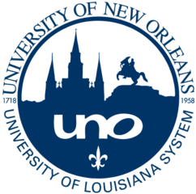

I grew up in Bogotá, Colombia Six years ago I moved to New Orleans to study Electrical Engineering and Psychology at The University of New Orleans. While studying, I played for the Tennis Team and I ran for the Track and Field team.
After graduation, I became a PhD student in Computer Science at Tulane University and started working with Prof. K. Brent Venable.. My research interests include Artificial Intelligence, Decision Making Theories and Digital Marketing.